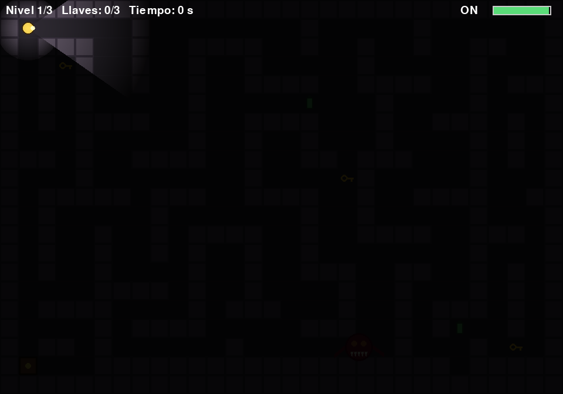

- 3 niveles. En cada uno junta las 3 llaves, abre las puertas de colores y llega a la salida.
- La linterna gasta batería; las pilas verdes la recargan. Con luz ves lejos... y el monstruo también te ve.
- El monstruo patrulla; si te ve, te persigue (la pantalla tiembla y suena un zumbido).
- En el nivel 3 hay un espectro que solo se mueve cuando no lo alumbras.
- Dificultad Fácil / Normal / Difícil al empezar.
Necesita: Python 3 + pygame · Linux, Windows y Mac
⬇ Descargar .zip (13 KB) 🎮 Jugar en el navegador▶️ Cómo jugar
- Descarga y descomprime el zip.
- Instala pygame:
pip install pygame - Corre
python3 escape.py(en Windows:python escape.py; en Linux/Mac también sirve./jugar.sh).
🎮 Controles
| Flechas | moverte |
| F | prender/apagar la linterna |
| ESPACIO | elegir en el menú / siguiente nivel |
| R | reiniciar |
| ESC | salir |
⌨️ Cambiar los controles
Abre controles.txt (está junto a escape.py) y cambia la tecla después del =. Así viene de fábrica:
izquierda = left derecha = right arriba = up abajo = down linterna = f continuar = space reiniciar = r salir = escape
Nombres válidos: letras (a, b...), flechas (up, down, left, right), space, return, tab, left shift, left ctrl y números. Si escribes una tecla que no existe, el juego avisa y usa la de siempre.
✏️ Haz tu propio nivel
Los niveles están en laberinto1.txt, laberinto2.txt y laberinto3.txt. Son dibujos de texto: cada letra es un cuadrito.
# | pared |
. | piso |
P | tú |
M | monstruo |
E | espectro (se congela con la luz) |
K | llave de salida |
D | puerta de salida (se abre con todas las K) |
B | pila |
r v a | llave roja / verde / azul |
R V A | puerta roja / verde / azul |
Edita el dibujo, guarda, y corre: python3 escape.py mi_laberinto.txt
- Tiene que haber una P y una D. Lo demás es opcional.
- Puedes pasar varios archivos y se juegan en orden:
python3 escape.py uno.txt dos.txt.